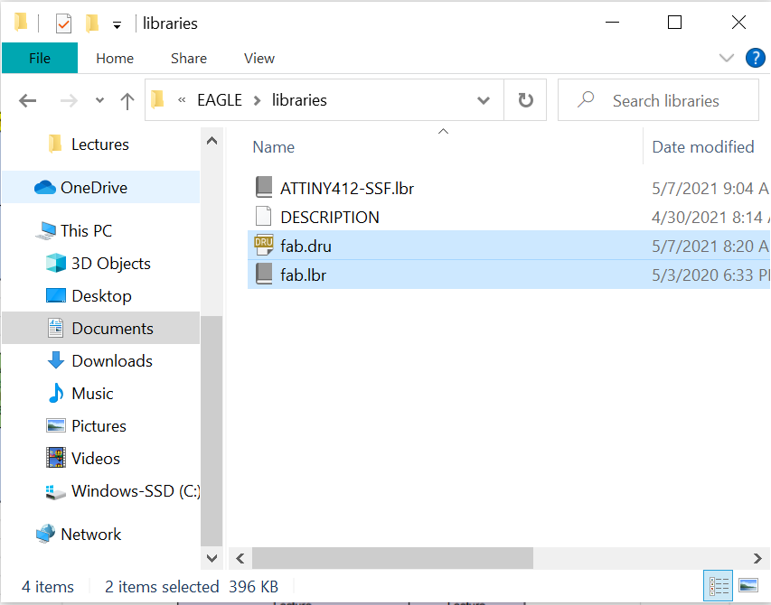
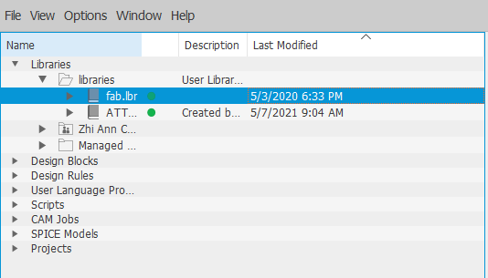

Electronic Design
What is electronic design?
Electronic design is a process of working out a circuit board that works for it's intended purpose, which will eventually help you to construct your own physical circuit board. This has to be done prior to electronic production.
What is a PCB Board?
PCB stands for Printed Circuit Board, it works by mounting electronic components onto the board and the traces allows the components to connect together and form a working circuit.
Setup and Installation
To start of, we would have to install the software Autodesk Eagle which can be downloaded by clicking on the hyperlink.
Once the software has been installed, we have to download 2 files from FAB Electronics components for Autodesk Eagle. This will give us the necessary components needed for us to design our own circuit Board.
To download the two files, click on the "Eagle" folder and install the following: "fab.dru" and "fab.lbr".

Next, click on File Explorer and go to this directory Documents > Eagles > libraries, cut & paste both downloaded files to this location.
To enable access to "fab.lbr", open AutoDesk Eagle. At the top left hand corner, click on "Libraries", right click on "fab.lbr" folder and check the box "use", a green icon will appear beside the file name which shows that it is activated. This allows us to use the components that are more commonly used to build our circuit board.
Our Assignment
In our given assignment by Mr Steven, we were told to design our own circuit board. Hence, i have decided to design a 85ATiny PCB.
We start of with drawing out our schematic diagram. On Eagle software at the top left hand corner of the page, click on File > New > New Schematic.
To make a 85ATiny PCB we need the following components:
- Tiny 45(85) Microchip x1
- AVR ISP SMD x1
- FTDI Header x1
- 6mm Button x1
- Fab 1u Capaciter x1
- Ground x5
- VCC x4
- Fab LED x1
- Fab 10kohms Resistor x2
- Fab 499ohms Resistor
There are two ways we can do the wiring for our circuit board. Firstly, by manual wiring which is to connect wires from one component to another. The second method is more efficient and has less complications when connecting mutiple wires, this is done by naming the wires with the same names that is attached to the respective ends of the component, and Eagle will automatically ask you if you would want to connect the two components from the named wires.
So here is my completed schematic diagram for ATiny45 PCB
To prepare our Trace/Outline files for milling out the PCB, we have to generate a visual representation of our circuit board. Click on the "switch/generate" option on the top left hand corner of the page, this will bring us to our board with all the wirings and components made in the schematic diagram.
Place the components inside the yellow box in a nice and orderly manner. Once done, click on the autorouter icon, click "continue" and then "start". Ensure that the routing variants is 100% before clicking "end job", this ensure that your wiring has the best possible route.